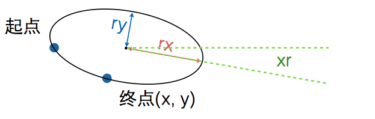
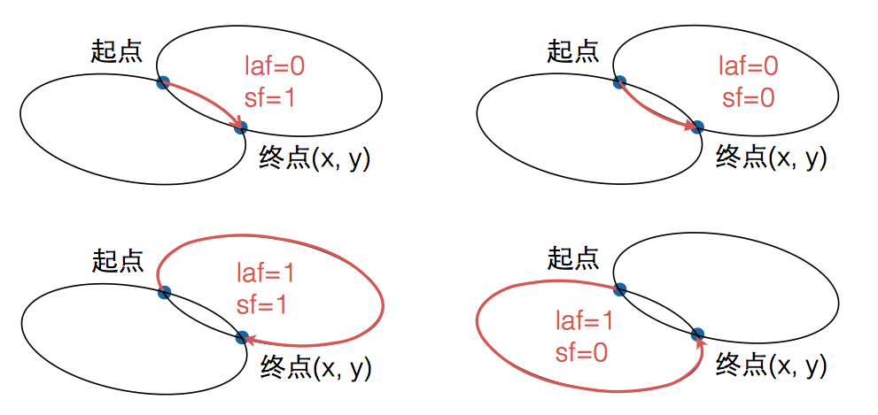

path 命令
| 命令 | 含义 |
|---|---|
| M/m (x,y)+ | 移动当前位置 |
| L/l (x,y)+ | 从当前位置绘制线段到指定位置 |
| H/h (x)+ | 从当前位置绘制⽔水平线到达指定的 x 坐标 |
| V/v (x)+ | 从当前位置绘制竖直线到达指定的 y 坐标 |
| Z/z | 闭合当前路径 |
| C/c (x1,y1,x2,y2,x,y)+ | 从当前位置绘制三次⻉贝塞尔曲线到指定位置 |
| S/s (x2,y2,x,y)+ | 从当前位置光滑绘制三次⻉贝塞尔曲线到指定位置 |
| Q/q (x1,y1,x,y)+ | 从当前位置绘制⼆二次⻉贝塞尔曲线到指定位置 |
| T/t (x,y)+ | 从当前位置光滑绘制⼆二次⻉贝塞尔曲线到指定位置 |
| A/a (rx,ry,xr,laf,sf,x,y) | 从当前位置绘制弧线到指定位置 |
命令基本规律
- 区分大小写：大写表示坐标参数为绝对位置，小写则为相对位置
- 最后的参数表示最终要到达的位置
- 上一个命令结束的位置就是下一个命令开始的位置
- 命令可以重复
移动和直线命令
- M (x, y)+ 移动画笔，后面如果有重复参数，会当做是 L 命令处理
- L (x, y)+ 绘制直线到指定位置
- H (x)+ 绘制水平线到指定的 x 位置
- V (y)+ 绘制竖直线到指定的 y 位置
- m、l、h、v 使用相对位置绘制
弧线命令
- A (rx, ry, xr, laf, sf, x, y) - 绘制弧线
- 最复杂的命令
- rx - （radius-x）弧线所在椭圆的 x 半轴长
- ry - （radius-y）弧线所在椭圆的 y 半轴长
- xr - （xAxis-rotation）弧线所在椭圆的长轴角度（旋转弧线）
- laf - （large-arc-flag）0：较短弧，1：较长弧
- sf - （sweep-flag）0：从起点出发逆时针方向的弧，1：从起点出发顺时针的弧
- x, y - 弧的终点位置
图解

在已知半径的和角度的情况下，两个不同的点是可以确定两个椭圆，因此两点间的弧线就会有四条。
- laf 0：较短的两条弧，1：较长的两条弧
- sf 0：从起点出发逆时针方向的弧，1：从起点出发顺时针的弧
